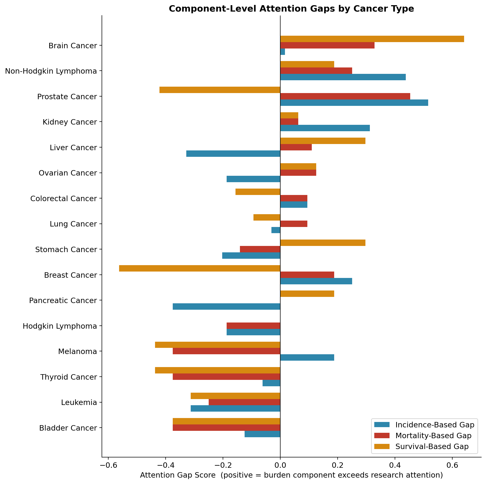
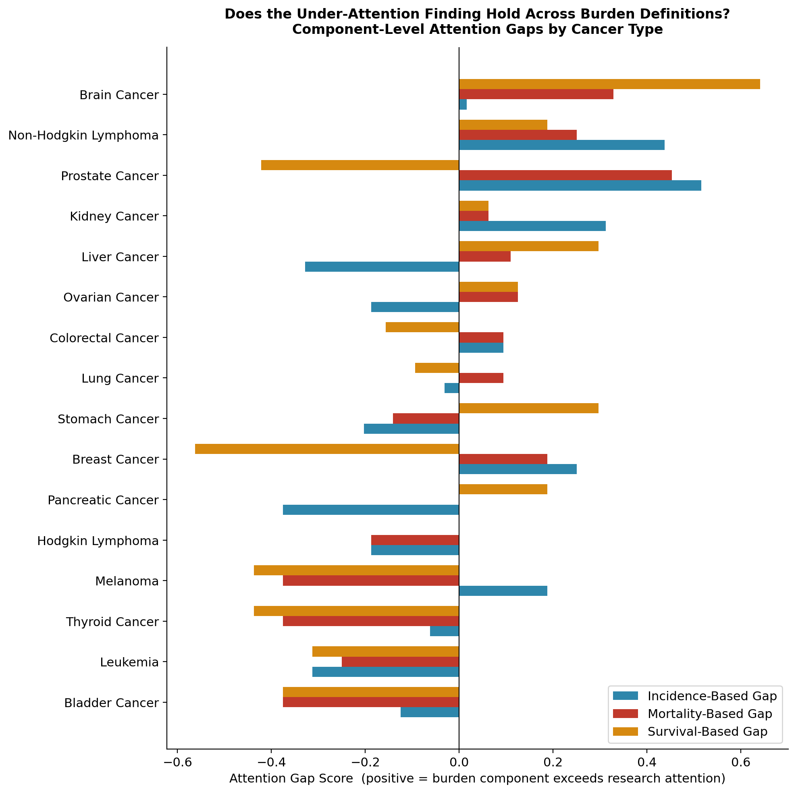
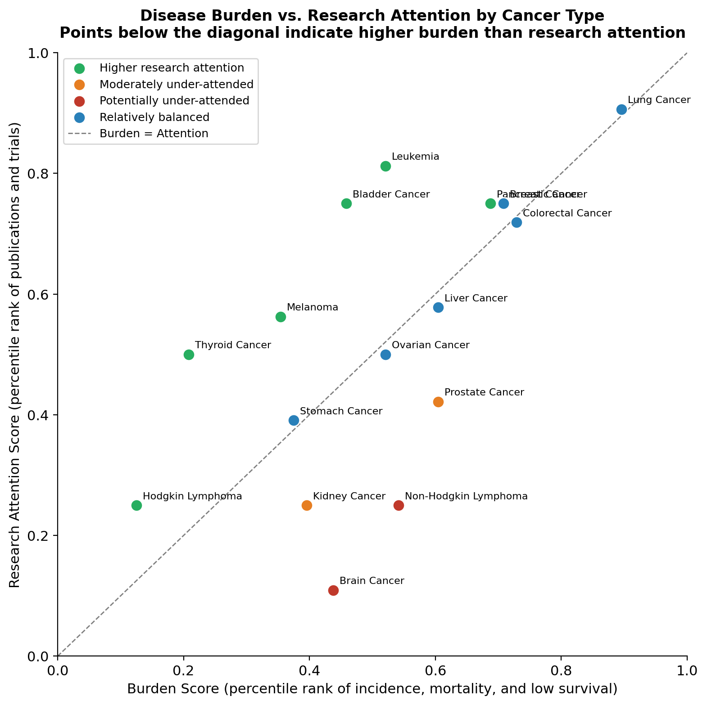
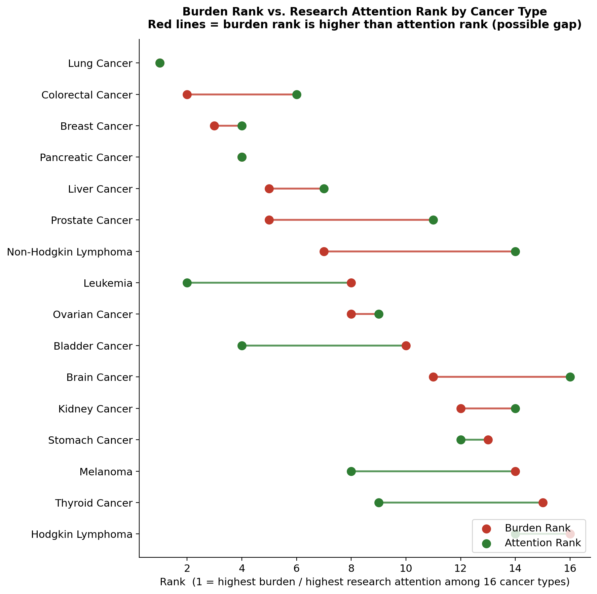
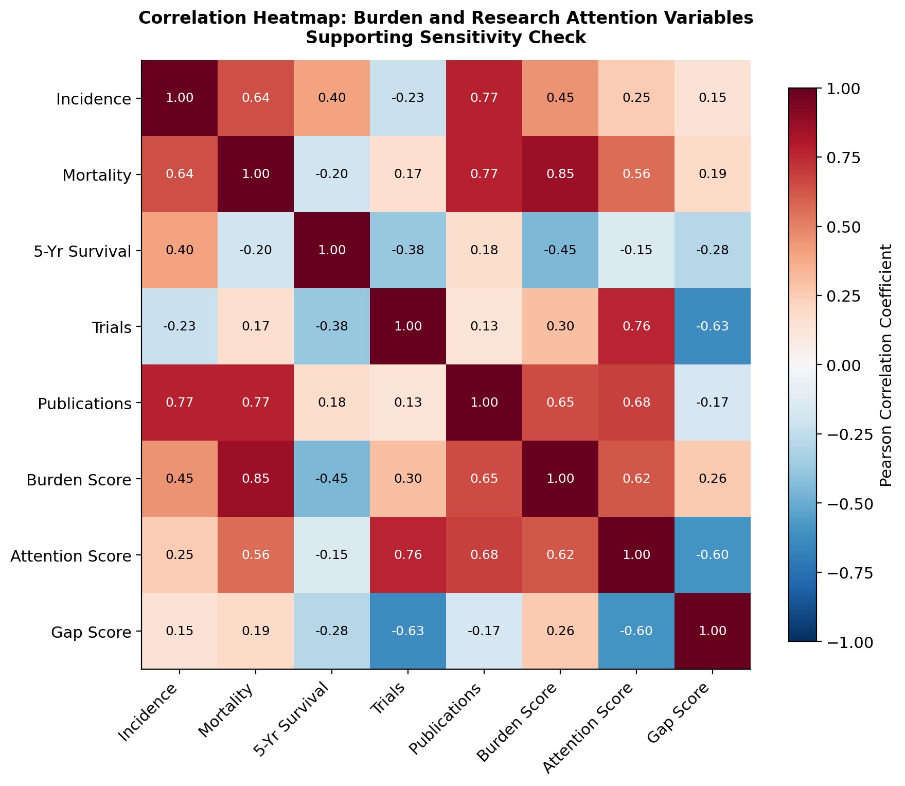
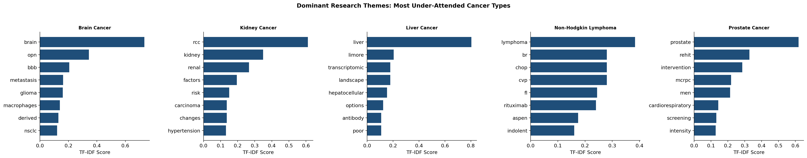
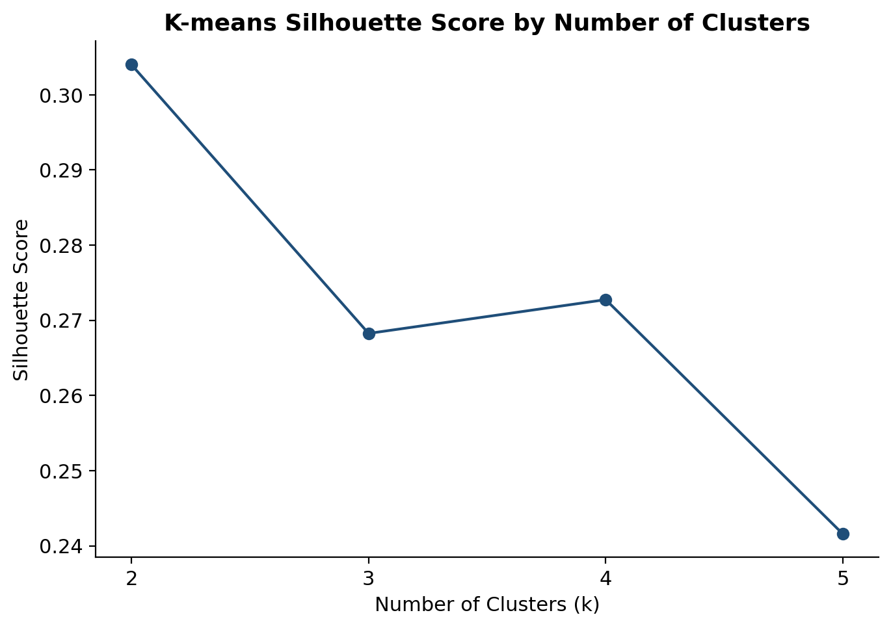
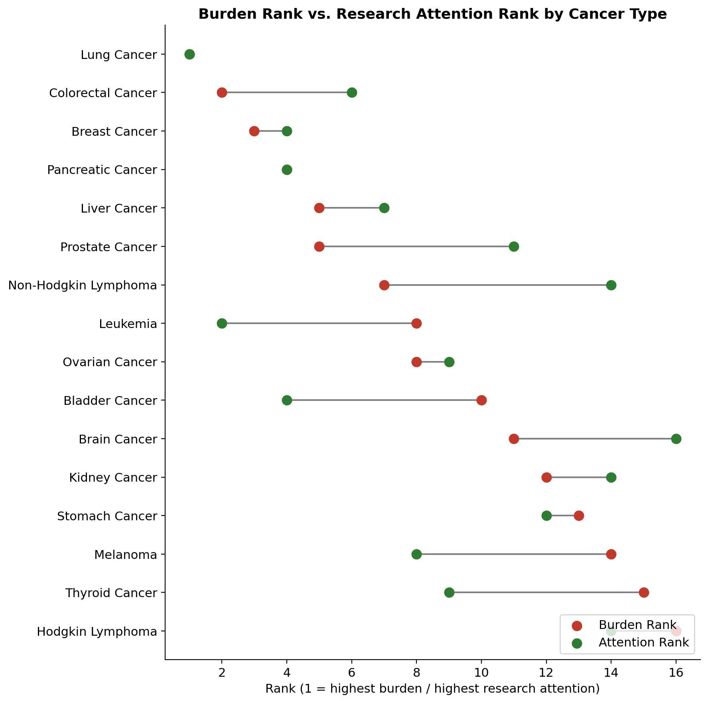

01
High review priority
Brain Cancer
+0.33The largest positive gap of all sixteen cancer types. Severity-driven — the signal is concentrated in mortality and survival rather than incidence.
Research & Funding Strategy Proposal · Columbia University, APANPS5205
A data-driven screening framework comparing cancer research attention with disease burden across sixteen major cancer types, 2019–2023.
Are cancer research resources aligned with the burden of disease?
Biomedical research attention does not always move in proportion to disease burden. When that drift goes unnoticed, cancer types with substantial unmet need can receive less scrutiny than their population impact would warrant.
Funding agencies and research strategy teams need a transparent, reproducible way to see where that gap is largest — so that limited expert review capacity is pointed at the right questions first.
“A cancer type can appear well-represented in the literature while still showing a meaningful proportionality gap once that activity is weighed against its burden.”
— Project Executive SummaryPercentile rank of incidence rate, mortality rate, and (1 − five-year relative survival), averaged per cancer type from SEER Cancer Stat Facts.
Percentile rank of PubMed publication counts and ClinicalTrials.gov registered trial counts, summed across 2019–2023 per cancer type.
Every variable is converted to its rank position (0–1) among the sixteen cancer types before scoring — this keeps incidence, mortality, and publication counts fairly comparable despite very different underlying scales.
The composite score is stress-tested through component-level decomposition, correlation analysis between publications and trials, K-means clustering (k = 3), and supplementary TF-IDF theme exploration — detailed in Supporting Analyses.
A positive score does not mean a cancer is definitely underfunded — it means the burden appears higher than measured research attention, and deserves closer review. These four cancer types show the clearest signal.
The largest positive gap of all sixteen cancer types. Severity-driven — the signal is concentrated in mortality and survival rather than incidence.
The most consistently validated signal — positive across incidence, mortality, and survival components alike, not just one dimension.
Volume-driven — a large affected population and strong five-year survival, rather than an especially severe burden profile.
A modest gap, but unusually consistent — it shows up across every burden component rather than being driven by one measure.
Lung Cancer and Pancreatic Cancer remain among the most burdensome cancer types studied in absolute terms. Their balanced-to-negative score here reflects measured research attention that is comparatively high relative to burden within this model — not lower clinical importance.
Review each with its own lens — Brain Cancer's gap is severity-driven, Non-Hodgkin Lymphoma's is consistent across every burden measure.
Track rather than escalate — Prostate Cancer's signal is volume-driven with strong survival; Kidney Cancer's is modest but steady.
This framework directs limited review capacity toward the most uncertain cases. Final funding decisions still require clinical expertise and direct funding data.
Eight views of the same underlying dataset — from the headline ranking to the diagnostics that stress-test it.

Breaks the composite score into incidence-, mortality-, and survival-based gaps side by side for every cancer type.
Takeaway — Brain Cancer's gap is concentrated in mortality and survival; Non-Hodgkin Lymphoma's holds up across all three.

The complete sixteen-cancer breakdown of incidence-, mortality-, and survival-based gaps, showing which burden dimension drives each signal.
Takeaway — Positive gaps cluster in a small group of cancers; most of the field shows small, mixed-sign component gaps.

Every cancer type plotted by burden (x-axis) against research attention (y-axis), with a diagonal line marking perfect alignment.
Takeaway — Brain Cancer and Non-Hodgkin Lymphoma sit furthest below the alignment line — higher burden than attention.

A dumbbell chart connecting each cancer type's burden rank to its attention rank among the sixteen types studied.
Takeaway — Long red connectors mark the clearest rank reversals — burden ranked meaningfully higher than attention.

Pairwise correlation across incidence, mortality, survival, trials, publications, and the composite scores — a sensitivity check on the model itself.
Takeaway — Publications correlate strongly with incidence and mortality; trial counts correlate only weakly with mortality — supporting the use of both as complementary attention signals.

Dominant terms from trial and publication text for the five cancer types with the largest Composite Attention Gap Scores.
Takeaway — Describes the topical character of existing research — it does not evaluate research quality or funding adequacy.

Cluster-quality diagnostic used to choose the number of clusters for the K-means corroborating analysis.
Takeaway — Supports k = 3 as a reasonable, defensible choice rather than an arbitrary one.

An extended rank-comparison view layering additional context onto the burden-versus-attention rank reversal pattern.
Takeaway — Reinforces the same short list of review priorities from a second, independent angle.
Decomposes the composite score into incidence-, mortality-, and survival-based gaps, clarifying whether a signal is volume-driven, severity-driven, or consistent across all three.
Evaluates whether publications and trial counts capture complementary rather than duplicative dimensions of research attention, validating their joint inclusion in the score.
Groups cancer types by overall burden-attention profile as an independent corroborating method (k = 3). Supplementary — it contextualizes but never overrides the composite score.
Applied to trial and publication text for the highest-gap cancer types, surfacing dominant research themes — describing topical character, not research quality or funding adequacy.